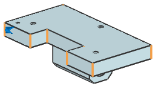
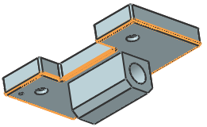
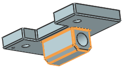

Blend edges
-
On the Feature toolbar, select Edge Blend
 .
.
-
From the Shape list, select Circular.
-
In the Radius 1 box, type 6.
-
Select the eight vertical edges of the top plate.

-
Click OK.
-
Blend the tangent edges around the bottom edges of the plate. Use the same blend radius.

-
Blend all of the edges around the pivot boss under the plate using the same radius.
